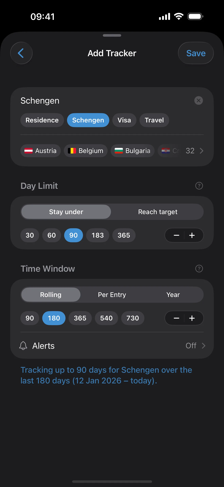
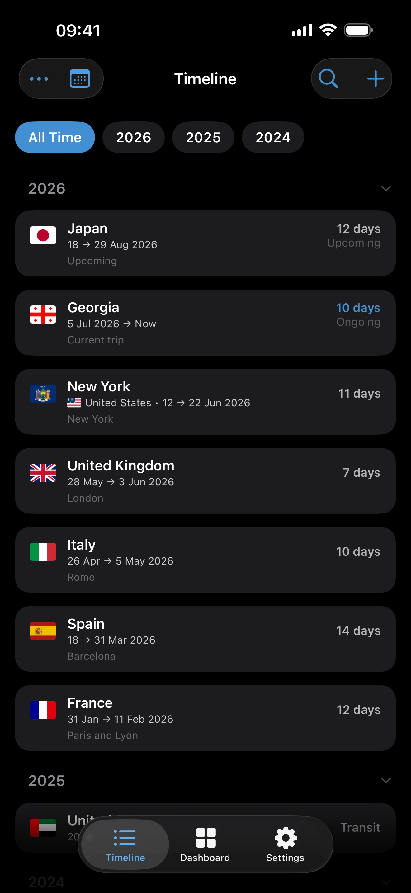

Trip Modes and Record Quality
Choose the right trip precision, keep incomplete history honest, and know when CSV import is the better tool.
What This Page Helps You Do
Use this page when you are adding trips manually, cleaning up old history, or deciding whether a trip should be exact, approximate, unknown, or transit.
By the end of this page, you should know:
- when to use Exact Dates, Year, or Unknown
- how Transit and Ongoing affect the record
- when manual entry is still better than CSV import
If a trip affects a live visa limit, residency threshold, or near-term paperwork question, keep it exact. Use Year or Unknown to preserve older history without making the precise counts less trustworthy.
Choose the Right Trip Mode
Exact Dates
Use Exact Dates when the trip needs to feed real day counts, tracker math, or an upcoming application or compliance check. This is the mode to use for current trips, recent trips, and anything you can verify from stamps, tickets, or records.
- Exact-date trips are the only trips that generate precise day totals.
- They are also the only trips that can be ongoing or upcoming.
- AtlasDays counts both the arrival day and the departure day for exact-date trips.

Year
Use Year when you know which year a trip belongs in, but you do not know the exact entry and exit dates. This is for reconstructed history, not for active counting.
- A year-only trip can be a single year or a multi-year range.
- Use it for approximate past history, not planned travel.
- It preserves the visit without pretending you know the exact dates.
Unknown
Use Unknown when you know you visited a place, but you cannot confidently place the trip in a year yet. In AtlasDays this is stored as a trip with no date fields.
- Unknown trips appear in the No Date section of the timeline.
- They are useful for preserving history while you keep researching the dates.
- They do not generate exact day counts or precise tracker results.
Use Transit Only for Non-Entry Travel
Mark a trip as Transit when you did not actually enter the country, such as an airside layover or similar pass-through travel. Transit entries stay in your record, but AtlasDays counts them as 0 days.
If the trip should count toward time spent in the country, do not mark it as transit even if it was short.
How Ongoing Trips Work
Only exact-date trips can be ongoing. To create one, save the trip with a start date and leave the end date empty.
- Ongoing trips appear in the Ongoing section of the timeline.
- AtlasDays uses today as the effective end date until you close the trip.
- If you need a planned future trip, use Exact Dates as well.
Keep the Record Usable
- Approximate entries are for preserving history, not for exact counters.
- Date conflicts are flagged in Timeline when exact-date, non-transit trips overlap and should be resolved before you rely on the totals.
- Manual entry blocks exact duplicates when you try to save them.
- CSV import skips duplicate rows automatically instead of adding them twice.

When to Use Import Instead of Manual Entry
Use manual entry when you are logging a small number of trips, cleaning up recent travel, or still deciding which entries should be exact versus approximate.
Use CSV import when you already have a spreadsheet, a large backlog of travel history, or rough source material you want to convert into a batch import. Decide the right precision for each trip first, then build or clean the file.
Where to go next
CSV Import explains the file format, preview step, duplicate handling, overlap warnings, and the AI prompt helper.
Getting Started shows how trip quality fits into initial app setup.
Trackers and Limits explains why exact trips matter when you want actionable counters.
Dashboard and Map explains how your trip record turns into totals, summaries, and map output.